2．无穷级数的早期工作
无穷级数在数学中是出现得很早的，出现的形式通常是公比小于1的无穷几何级数。亚里士多德(1)就已认识到这种级数有和。无穷级数还散见在中世纪后期数学家的著作中，被用来计算变速运动的物体所走过的路程。曾经研究过一些这类级数的奥雷姆（Nicole Oresme），在他的小册子《欧几里得几何问题》（Quœstiones Super Geometriam Euclidis，约1360年）中，甚至证明了调和级数
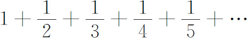
是发散的，他用的正是今天的方法，就是代之以一个每项都较小的级数
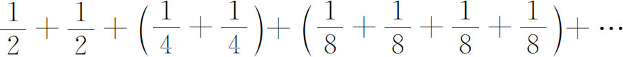
并看出后者是发散的，因为我们能够得到要多少就有多少的括号，其中每一个的值都等于1/2。然而，人们不应由此断言，奥雷姆或一般数学家们，已经开始识别收敛级数与发散级数。
韦达在他的《各种各样的解答》（Varia Responsa，1593，Opera，347-435）中给出了一个无穷几何级数的求和公式。他从欧几里得的《原本》知道，n项和
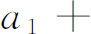
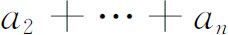
可用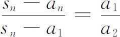
给出。这样，如果
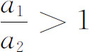
，则当n变为无穷时an趋向于0，所以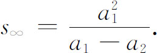
17世纪中叶，圣文森特的格雷戈里在他的《几何著作》（Opus Geometricum，1647）中，证明了阿喀琉斯（Achilles）追龟的悖论可以用无穷几何级数的求和来解决。和是有限的这件事表明，阿喀琉斯可以在一个确定的时间与地点追上乌龟。圣文森特的格雷戈里第一次明白指出了无穷级数表示一个数，即级数的和。他称这个数为级数的极限。他说：“过程的结束就是级数的终点，即使延续到无穷，过程也永远达不到这个终点，但是它能够趋向于它并接近到任何给定的程度。”他还有许多其他的不够准确和清楚的论述，但他对这个课题做出了贡献并影响了很多学生。
墨卡托（Nicholas Mercator）和牛顿（第17章第2节）发现了级数
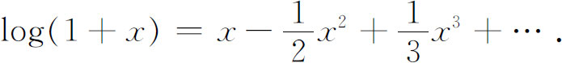
人们观察到，在x＝2时级数的值为无穷，而根据左边，它却应该取log 3。沃利斯注意到了这个困难，但不能解释它。牛顿得到了许多其他表示代数函数和超越函数的级数。例如，在1666年，为了得到arcsin x的级数，他用了这样的事实（图20.1），面积
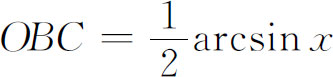
，因此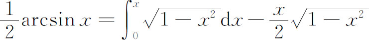
。他把右边展开为级数，逐项积分，并项，得到了结果。他还得到了arctan x的级数。在1669年的《分析学》（De Analysi）中，他给出了sinx，cosx，arcsinx和ex的级数。这些级数中的某些是用从其他级数求逆的办法得到的，即把自变量作为应变量解出来。他用的方法是粗糙的和归纳的。虽然如此，牛顿对自己推导出了如此之多的级数还是感到莫大的欣慰。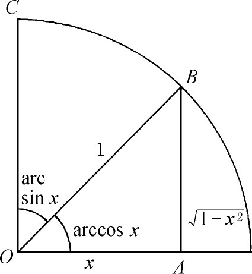
图20.1
柯林斯（John Collins）在1669年收到了牛顿的《分析学》，并于1670年12月24日把级数方面的结果告诉了詹姆斯·格雷戈里。詹姆斯·格雷戈里在1671年2月15日答复说［滕博尔（Turnbull），《通信》（Correspondence），1，52-58和61-64］，他得到了其他一些级数，其中包括
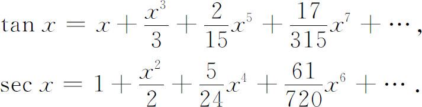
他如何推导出这些级数是无从知道的。莱布尼茨也在1673年大概独立地得到了sinx，cosx和arctanx的级数。在微积分早期阶段，研究超越函数时用它们的级数来处理是所用方法中最富有成效的，也是牛顿和莱布尼茨微积分工作的一个重要部分。
这些人和其他使用分数指数与负指数的二项式定理的人，为了得到很多级数，不仅不顾由于运用这些级数而产生的问题，甚至也没有证明二项式定理。他们认为级数等于展成这个级数的函数是没有问题的。
詹姆斯·伯努利在1702年(2)推导出了sinx和cosx的级数。用的方法是，他先把sinnα按sinα展开，然后让α趋向于0而n变成无穷，使得nα趋向于x而同时nsinα即
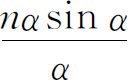
也趋向于x。沃利斯在他的《代数》（Algebra，1693）的拉丁文版中指出，牛顿在1676年再次给出了这些级数；詹姆斯·伯努利看到了这句话，但未申明牛顿的优先权；此外，棣莫弗在1698年的《哲学汇刊》（Philosophical Transactions）(3)中已给出了牛顿结果的证明；虽然詹姆斯·伯努利在其他工作中用过并引证过这个杂志，但他并没有表明他是通过这渠道注意到牛顿的工作的。除了用于微积分之外，级数的主要应用之一在于计算一些特殊的量，如π和e，以及对数函数和三角函数。牛顿、莱布尼茨、詹姆斯·格雷戈里、科茨、欧拉和其他许多人，都是为了这个目的而对级数感兴趣的。然而，有些级数收敛得这样慢，对于计算来说几乎不能使用。例如，莱布尼茨在1674年得到了有名的结果(4)
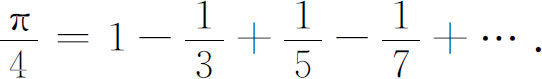
但为了计算π，即使是达到阿基米德已经得到的精确度，也得算100000项。同样，log（1＋x）的级数收敛也十分慢，必须取很多项才能达到小数点后几位的精确度。有各种方法把这个级数变成收敛比较快的级数。例如，詹姆斯·格雷戈里［《几何练习》（Exercitations Geometricae），1668］得到了
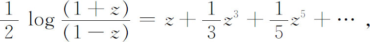
并证明了它在计算对数中更有用。把一个级数变成另一个收敛比较快的级数的问题，在整个18世纪有许多人继续研究过。有一个这样的变换，是属于欧拉的，我们将在第4节中给出。
级数还有另一应用，是由牛顿开始的。给定一个隐函数
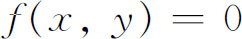
，人们希望把y表示为x的显函数。这样的显函数可能有好几个，例如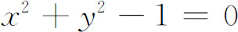
这个最简单的情形，显然就是这样，它有两个通过点（1，0）的解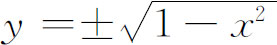
。在这简单的情形里，两个解都能够表示为有尽的分析表达式。但是，一般说来，y的每一个表达式都必须表示为x的无穷级数。当然，这些级数并不一定是幂级数，特别是在奇点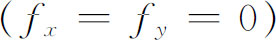
处的展开式更是这样。牛顿在他的《流数法》中发表了决定这几个级数的形式的一个方法，每一个显函数解就是这些级数之一。他的方法（其中用到了有名的所谓牛顿平行四边形）指出，在形如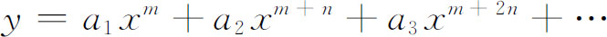
的级数中，如何决定前头几个指数。然后，这些级数的系数可以用待定系数法定出来。事实上，牛顿也只是给出了一些特殊的例子，人们只能从中推断他的方法。
对每一个级数来说，决定指数的方法是很麻烦的，泰勒、斯特林和麦克劳林给出了一些法则；麦克劳林还试图推广和证明这些法则，但未成功。牛顿方法的一个证明由克莱姆（Gabriel Cramer）和克斯特纳（Abraham G．Kästner，1719—1800）独立地给出。